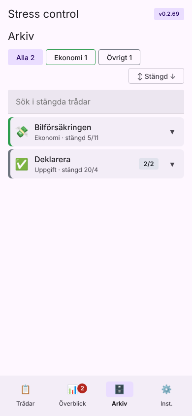

Stress control
Skriv ner det – och släpp det.
Tre principer bakom appen
Ett tydligt fokus
Appen svarar på en enda fråga. Allt annat väljs aktivt bort.
Integritet först
Ingen inloggning, ingen spårning. Data stannar på telefonen, och webbläsaren stänger ute allt som inte är appens eget.
Ren webb
HTML, CSS och vanlig JavaScript. Inga byggsteg – hela appen kan levereras som en enda fil.
Varför den här appen?
Saker som snurrar i huvudet tar energi. När ett symptom, en jobbansökan eller ett husköp finns nedskrivet med nästa steg kan du släppa tanken – appen håller reda på den åt dig.
Så ser det ut



Trådar · Överblick · Arkiv – påhittad exempeldata
En tråd per sak som snurrar
Typer med rätt fält
Symptom, Jobbansökan, Ekonomi, Försäkringskassan och fler – var och en med fält i logisk ordning. Gör egna typer med text, datum, tal, bock och val i lista.
Delmål och logg
Bocka av nästa steg med datum. Skriv korta anteckningar – Ringde, fick tid 18/11 – så minns du var du är.
Återkommer varje år
Bilskatt, service, deklaration: arkivera tråden så skapas nästa, med alla datum flyttade framåt.
Arkiv och papperskorg
Lösta trådar sparas komprimerat – runt 10 000 ryms i telefonen. Borttaget går att ångra.
Se vad som brinner – på en skärm
Aktuellt
Försenat, idag och imorgon överst. Sedan det som närmar sig inom din påminnelsetid – med en röd siffra på fliken.
Deadlines
Fält som Klart senast och Förfaller syns även när datumet passerat, tills du gjort något åt dem.
Siffror som går att trycka på
Öppna trådar, delmål kvar och stängda senaste månaden. Per kategori i färg, och vad som kommer de närmaste veckorna.
Vem gör vad i familjen
Vem utför
Välj person per tråd och filtrera listan: allt som är ditt, din sambos – eller det ingen tagit än.
Egna egenskaper
Relation, född, telefon, skola – eller egna som Allergier och Skostorlek. Samma egenskaper för alla, i den ordning du vill.
Arbetstid per person
40 timmar för den ena, 30 för den som jobbar 75 %. Används när appen räknar timmar borta.
VAB utan att tappa en dag
Välj ersättning i en lista – VAB, föräldrapenning, sjukpenning och fler, eller egna. Lägg in dagarna direkt när de händer.
Säkerhetstestad
Automatiska tester körs före varje commit och push. Underkänt test = ingen release.
Säkerhetskontroll
- Bara appens egen kod körswebbläsaren blockerar allt annat, även om någon försöker smyga in något.
- Inget lämnar telefonenappen pratar aldrig med någon server.
- Din data stannar hos digsparas bara i telefonen; appen rör bara sina egna uppgifter.
- Fungerar utan nätmed bara appens egna filer – inget hämtas utifrån i smyg.
- Låst backupbara ditt lösenord öppnar filen – samma typ av kryptering som banker använder. Lösenordet finns aldrig i filen – bara i telefonen, om du vill.
Funktionstester
- Trasiga filer stoppasen backup från fel app, eller som någon ändrat i, läses inte in.
- Inget innehåll kan bli kodallt visas som vanlig text, även konstiga namn.
- Export och raderingbackup tur och retur ger samma data; radera tar bara appens egna data.
När känslig data läcker
Verkliga intrång hos stora tjänster som sparar samma sorts data som de här apparna. Vilka bolagen var spelar mindre roll – det är datan som gör ont.
Kaloriapp · 2018
En av världens största kaloriappar tappade 150 miljoner konton: e-post, användarnamn och lösenord – nyckeln till dagboken med vikt och mat.
Terapijournaler · 2020
En psykoterapiklinik hackades. Anteckningar om oro och mående från tiotusentals samtal läckte, och patienterna utpressades en och en.
Hela ekonomin · 2017
Hos en kreditupplysningsfirma kom angripare åt personnummer, adresser och kreditdata för nära 150 miljoner människor.
Barnens uppgifter · 2024
En skolplattform hackades. Namn, adresser och i vissa fall hälsouppgifter för tiotals miljoner elever kom ut.
Gemensamt: datan låg samlad på en server. I de här apparna finns ingen sådan server.
Det som säljs – utan intrång
Läckor är olyckor. Det här är inte det – det är så många appar tjänar pengar. Alla fall ledde till böter eller förlikning hos amerikanska myndigheter.
Mens och graviditet
En mensapp delade användarnas uppgifter om mens och graviditet med annons- och analysföretag – trots löfte om motsatsen.
Psykisk hälsa
En terapitjänst på nätet skickade svar om användarnas mående till sociala medier, för riktad reklam.
Mediciner
En recepttjänst delade vilka läkemedel och diagnoser användarna hade med stora annonsplattformar.
Varje köp
Bankkopplade budgettjänster kan sälja transaktioner – var du handlar och vad du tjänar – avidentifierade, till investerare och analysföretag.
Är du bekväm med att din vikt, din oro eller din lön blir en vara? De här apparna har inget att sälja: inget konto, ingen server, ingen analys.
Ingen server – inget att stjäla
Känslig data läcker oftast på två sätt: ett företags databas hackas, eller företaget säljer och delar den. En budgetapp vet allt om din ekonomi, en hälsoapp din vikt, en familjeapp dina barns namn.
Ingen databas att hacka
Vanliga appar samlar miljontals användare på ett ställe – ett drömmål för hackare. Här finns datan bara i din telefon.
Inget att sälja
Inget konto, ingen analys, ingen reklam. Webbläsaren spärrar anrop ut, så datan kan inte skickas iväg – ens av misstag.
Låst även i molnet
Backupen krypteras med AES-256 och ditt lösenord innan den lämnar telefonen. Molntjänsten ser bara obegriplig data.
Ärligt: inget är 100 % säkert – lås telefonen, håll den uppdaterad och välj ett starkt lösenord. Men utan server finns inget centralt att stjäla.
Ett lösenord från start – sedan ett tryck
Ingen inloggning, bara nyckeln till dina backup-filer. Ingen server kan rädda datan, så backupen är din livlina.
Därför från start
Valt från början blir backup ett enda tryck – telefonen kommer ihåg lösenordet. Har du redan en backup läser du in den i stället.
Låt appen välja
Backupen låses med AES-256, och varje gissning måste först räkna 600 000 varv (PBKDF2-SHA256). Det gör varje försök extremt långsamt: 16 slumpade tecken tar längre tid att gissa än universum funnits, även med 1 000 grafikkort. Sommar2024! faller ändå på en dag – det finns i gissningslistorna.
Ny telefon
Spara backup-fil med ett tryck, med påminnelse varje månad. På nya telefonen: läs in filen, skriv lösenordet och tryck Ersätt.
Spara lösenordet
Det finns aldrig i filen. Utan det öppnas backupen inte – inte ens av utvecklaren. Lägg det i din lösenordshanterare.
Krypteringen skyddar filen när den lämnar telefonen. I telefonen skyddar skärmlåset.
Material Design 3, byggd för mobilen
Färg via roller
Nyckelfärgen styr allt. Ljust och mörkt tema följer telefonen. Nästan kantigt och tätt.
Bottenmeny för tummen · tryckytor ≥ 48 px · systemtypsnitt
Samma struktur, varje gång
index.html styles.css app.js store.js version.js sw.js docs/ SPEC · MANUAL · presentation tools/ tester · bygge dist/ testfil med allt inbakat
- SPEC först – idé, mål, icke-mål
- Säkerhet: förhandsprövning före bygget, efterkontroll före push
- Release kör kontroll och alla tester – underkänt stoppar
- Det som blir bättre här förs in i alla appar
Spara som app på hemskärmen
Ingen app-butik behövs. En genväg på hemskärmen startar appen i eget fönster utan adressfält – den ser ut och fungerar som en vanlig app, även utan nät.
Android
Öppna i Chrome, Brave eller Samsung Internet. Tryck på ⋮ och välj Installera app eller Lägg till på startskärmen.
iPhone och iPad
Öppna i Safari. Tryck på Dela (fyrkanten med pil uppåt), välj Lägg till på hemskärmen och sedan Lägg till.
Adress: flyinggooner.github.io/Stress-control
Öppnade du länken i Messenger eller en annan app? Välj först Öppna i webbläsare – annars går det inte att installera.
Enkelt för användaren.
Genomtänkt bakom kulisserna.
Trådar, delmål, personer och VAB-dagar – allt i telefonen, inget hos någon annan. Skriv ner det – och släpp det.